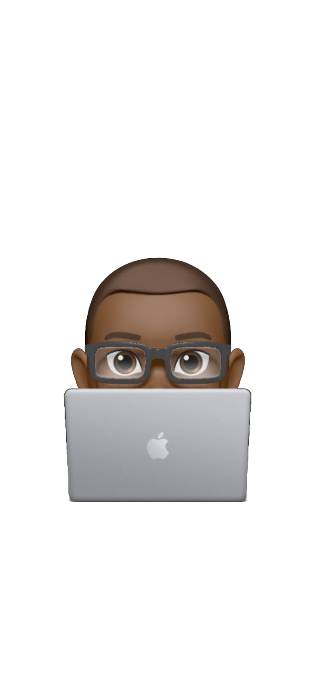
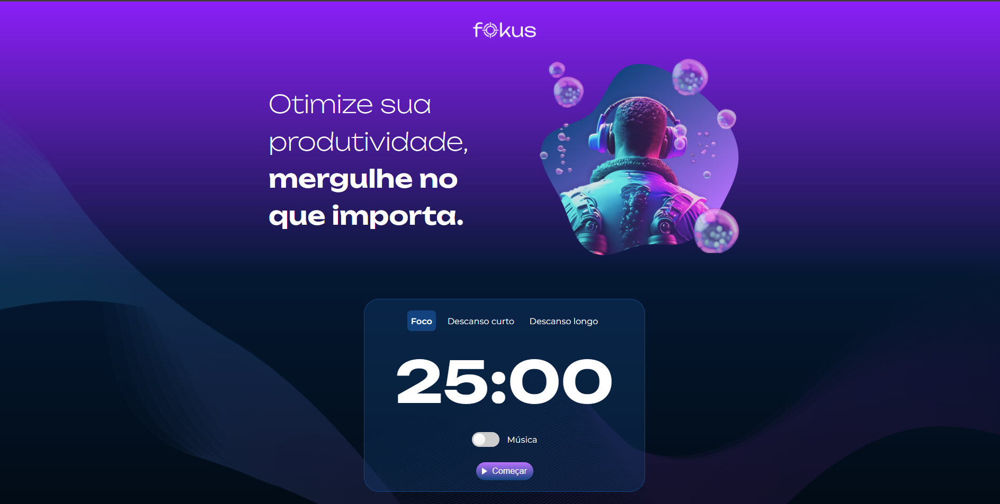

Olá, eu sou...
Ryan Fournier
Desenvolvedor Web

Sou um desenvolvedor web aprimorando minhas habilidades em HTML, CSS, JavaScript, Python, e banco de dados.
Sobre mim
Olá! Eu sou Ryan Fournier e estou em formação na área de
desenvolvimento web, buscando aprimorar minhas habilidades
e aprender cada vez mais sobre tecnologia.
Durante minha formação, venho desenvolvendo conhecimentos em
HTML, CSS, JavaScript, Python e banco de dados, colocando em
prática aquilo que venho aprendendo.
Meu objetivo é continuar evoluindo através de projetos e
adquirir cada vez mais experiência na área.
Tecnologias

HTML5

CSS
JavaScript
Python
Confira meus projetos

Viajar Brasil é um projeto criado durante o curso com o objetivo de informar, analisar, e recomendar lugares pelo Brasil. O projeto conta com um visual simples e acessível, inspirado na experiência de navegação do Booking.com.
Ver Projeto
O Jogo do Numero Secreto é um minigame desenvolvido para navegadores, com o intuito de ser leve e acessivel para a maioria dos navegadores web.
Ver Projeto
O Projeto Fokus foi criado para ajudar pessoas que tem dificuldade de atenção e que precisam aplicar a técnica do pomodoro em seus estudos ou trabalho. O projeto conta com um visual simples e fácil de entender.
Ver Projeto